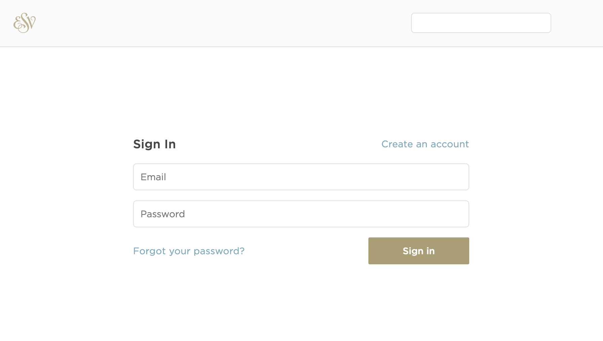
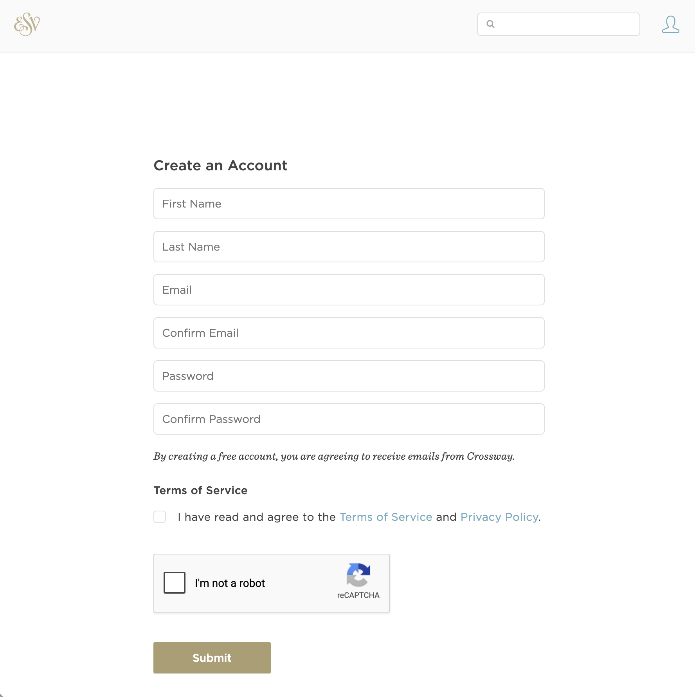
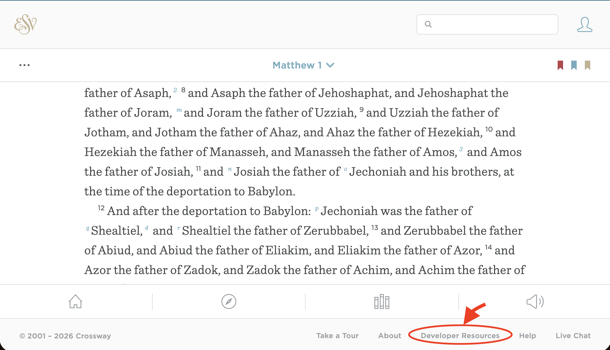
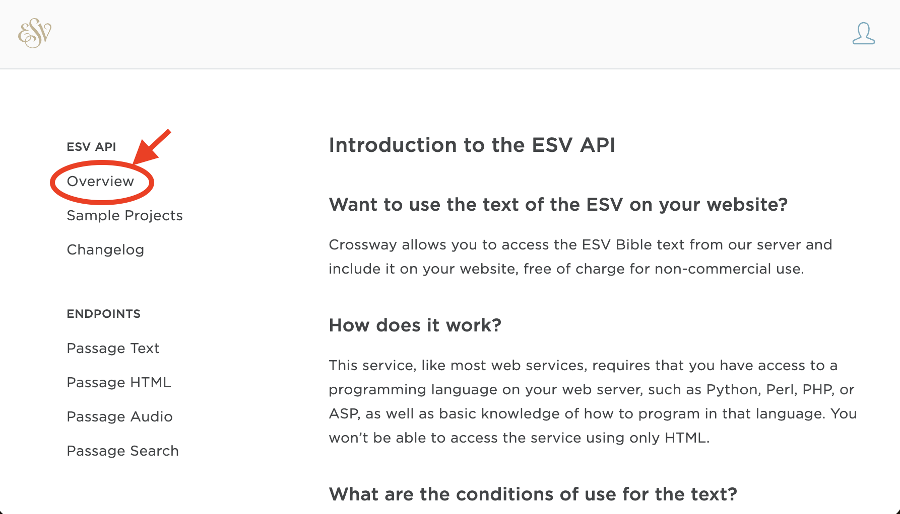
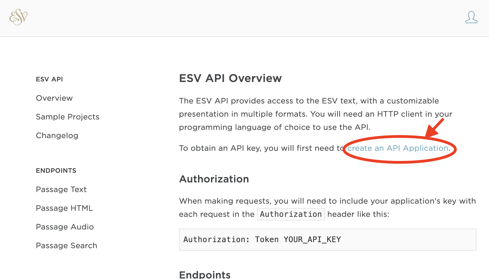
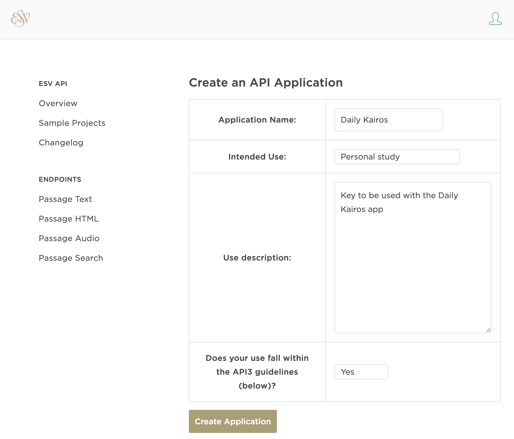
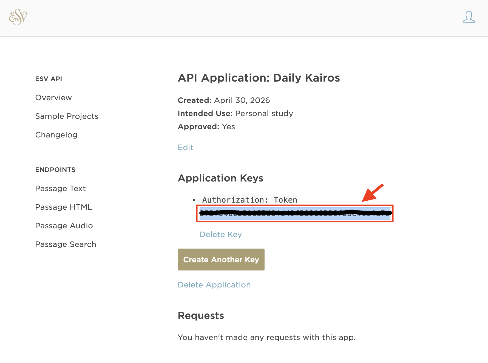
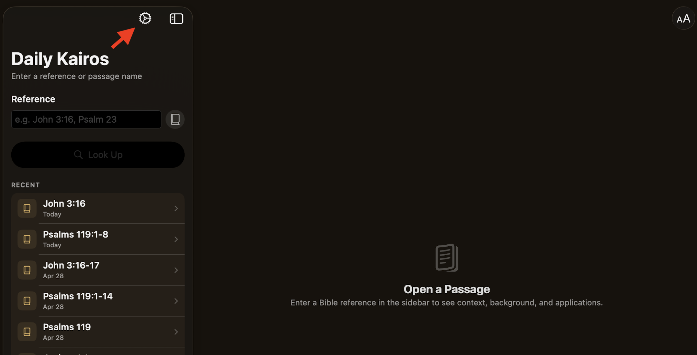
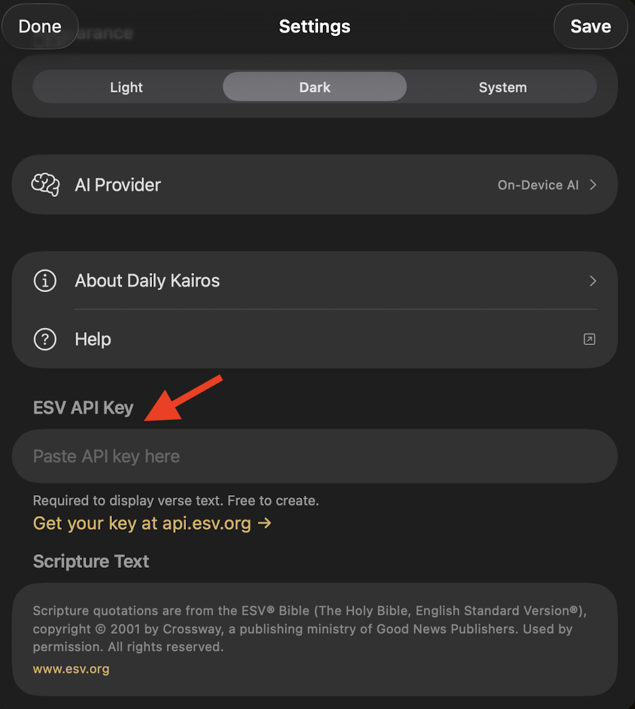
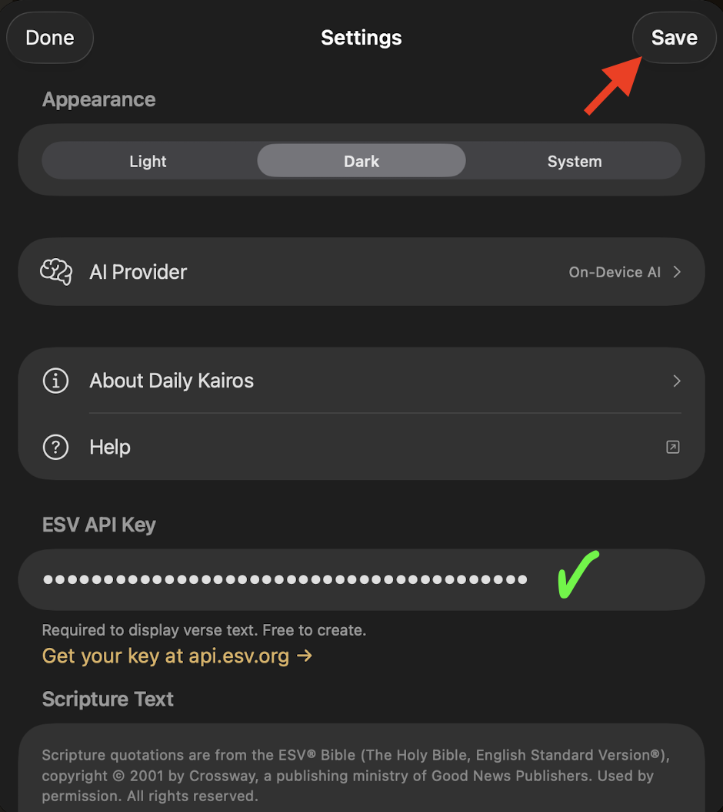

Setup · Required
ESV Bible API
Daily Kairos uses the ESV API from Crossway to retrieve Scripture passages. A free API key is required — registration takes about two minutes.
Step 1 — Create your ESV API key
Open your browser and go to api.esv.org/login. On the Sign In page, click Create an account to register for a free Crossway account. (If you already have one, sign in and skip to step 3.)

Fill in the Create an Account form: first name, last name, email address (twice), and a password (twice). Accept the Terms of Service and click Submit.

After signing in, go to esv.org. Scroll to the very bottom of the page and click Developer Resources in the footer.

You're now on the ESV API documentation site. In the left sidebar, click Overview.

On the Overview page, find and click the Create an API Application link.

Fill out the application form:
- Application Name: Daily Kairos
- Intended Use: Personal study
- Use description: Key to be used with the Daily Kairos app
- API guidelines: Select Yes
Then click Create Application.

Your application is created. Under Application Keys, you'll see your API token. Click Copy (or select and copy the token) — you'll paste it into the app next.

Step 2 — Enter the key in Daily Kairos
Open Daily Kairos on your device and tap the Settings icon (⚙️) in the top-left corner.

In Settings, scroll down to the ESV API Key field and paste your token into the Paste API key here field.

Tap Save in the top-right corner to store your key, then tap Done to close Settings.

Return to the main screen and look up any passage (e.g. John 3:16) to verify the key is working. The passage text should appear immediately.
Copyright & Usage Requirements
The ESV Bible text is copyrighted by Crossway. By using the ESV API you agree to display the following attribution and comply with all usage restrictions.
Required copyright notice
All use of ESV text must include the following notice:
Scripture quotations are from the ESV® Bible (The Holy Bible, English Standard Version®), © 2001 by Crossway, a publishing ministry of Good News Publishers. Used by permission. All rights reserved.
In addition, the label "ESV" must appear alongside each quoted passage, with a link to esv.org.
Usage limits
| Queries per day | 5,000 |
| Queries per hour | 1,000 |
| Queries per minute | 60 |
| Max verses per query | 500, or half a book (whichever is less) |
| Max verses displayed per page | 500, or half a book (whichever is less) |
| Max verses cached locally | 500 |
Restrictions
Non-commercial use only. Your app may not charge access fees or display advertising or sponsorships alongside ESV content.
No text modification. The ESV text must be displayed exactly as returned. You may omit headings, footnotes, and cross-references using the API's parameters, but you may not alter the Scripture text itself.
No redistribution of large portions. You may redistribute up to 500 verses, provided they do not comprise more than 50% of a complete Bible book or 50% of the total text of your work.
No sharing or selling your API key. Your key is personal and may not be distributed to others. Crossway may revoke API access at any time and for any reason.
Doctrinal alignment. Use of the ESV API must be consistent with the historic Christian understanding of doctrine, as determined by Crossway.
For the complete and authoritative terms, visit api.esv.org. Crossway's full copyright and licensing information is available at crossway.org.
Next: set up your AI provider
Now that Scripture lookups are working, configure an AI provider to enable reflections.